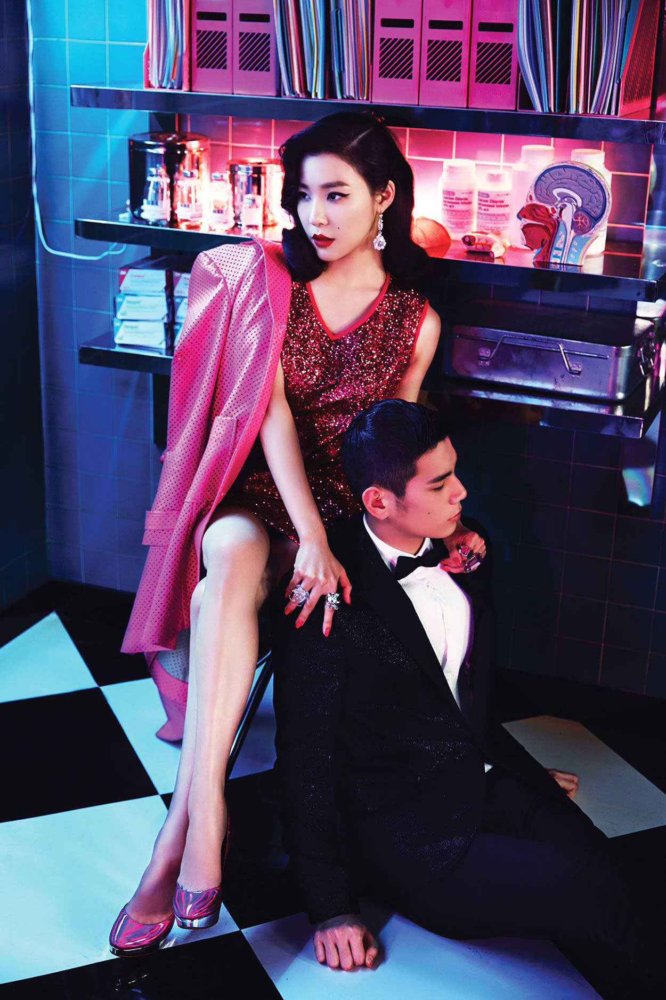

<!DOCTYPE html>
<html>
<head>

	<title></title>
	<link rel="stylesheet" type="text/css" href="memberStyle.css">

</head>
<body>

</body>
</html>

<div class="container">
	<div id="header">
		<font color="101010" size="60">0000000000000000000000</font>
		<a href="file:///home/eunice/Desktop/KIMBERLY OROZCO BSIS-2/index.html#section">MEMBERS</a><font color="101010">00</font>
		<a href=> SONGS</a><font color="101010">00</font>
		<a href=""> ALBUMS</a><font color="101010">00</font>
		<a href="">  ABOUT</a><font color="101010">0000</font>	
	</div>
	<br>
	<div id="member">
		<div id="section">
			<br>
		  	<div class="img">
			  <a target="_blank" href="taeyeon.html">
			 
			 </a>
			 </div>
				</div>
				<div id="name">Tiffany</div><br>
	
				<strong>Name: Hwang Mi-young (Stephanie) – Korean: 황미영<br>
				Birthday: August 1, 1989<br>
				Birthplace: San Francisco, California, USA<br>
				Height: 163cm – Blood type: O</strong><br><br>

				Released singles Oppa Nappa and Mabinogi with Seohyun and Jessica (2008)<br>
				Co-host of Sonyeo Sonyeon Gayo Baekso with Kim Hye-sung (2007-2008)<br>
				Solo in By Myself – drama OST for Ja Myung Go (2009)<br>
				Duet with K.Will in A Girl Meets Love (2009)<br>
				Co-host of MBC Music Core with Taeyeon and Seohyun (2012-2013)<br>
				Solo in Because It’s You – drama OST for Love Rain (2012)<br>
				Member of sub-unit Girls’ Generation-TTS (since 2012, details further below)<br>
				Duet with Kyuhyun in Rise and Shine – drama OST for To The Beautiful You (2012)<br>
				Solo in One Step Closer – drama OST for All About My Romance (2013)<br>
				Starred in survival-variety show Fashion King Korea (2013)<br>
				Duet with Super Junior-M’s Henry in Good Life – movie OST for Final Recipe (2014)
	</div>
	<br>
	<div id="footer">
			Copyright &copy; 2016 girlsgeneration.com | Kimberly Orozco BSIS-2
	</div>

</div>